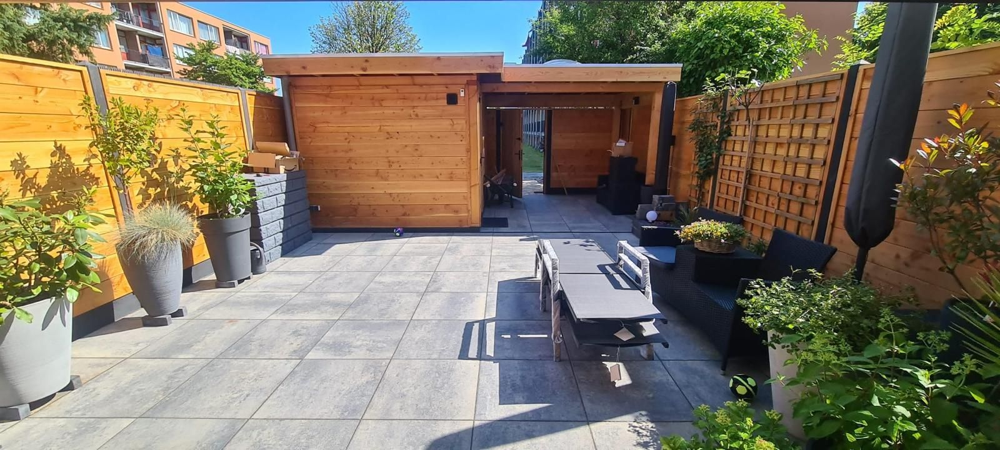

Budama · Dordrecht
Güçlü şekilde budanmış süs ağacı
Ön bahçede güçlü şekilde budanmış süs ağacı.
Benzer bir projeniz mi var?
Kendi projenizi oluşturun — bunu ilham olarak kullanın, ölçülerinizi ve isteklerinizi kendiniz girin.
Daha fazla çalışma